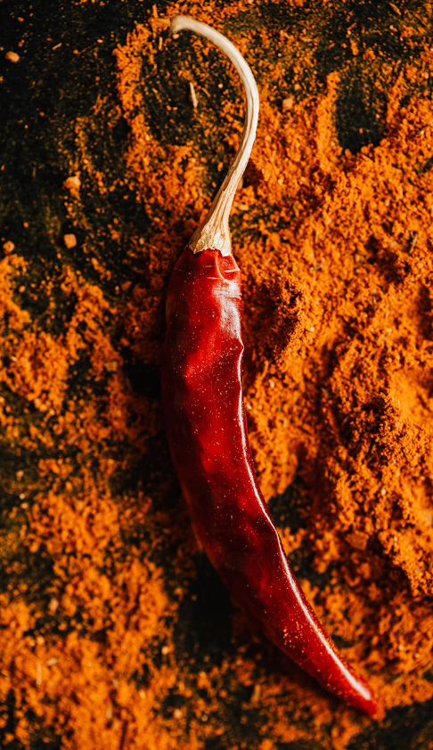
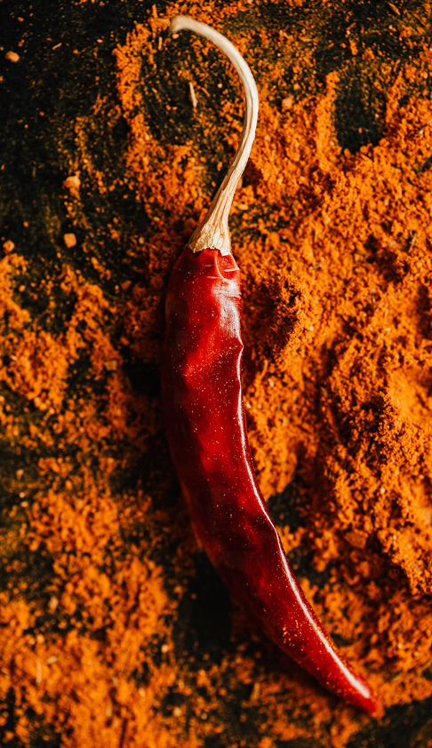
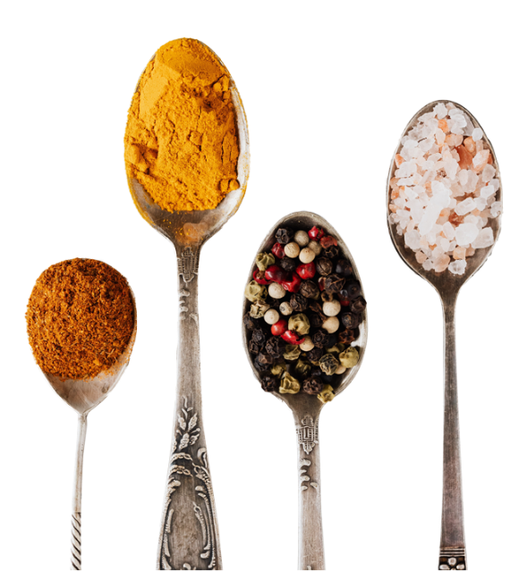
スパイスの効能や効果をご存知ですか？
スパイスには多くの種類がありますが、その中でもクミン、コリアンダー、ターメリックなど、ここ数年で知名度があがってきているスパイスは「食べる漢方」とも言われ、美容や健康にも高い効果を発揮します。
日々の食事にスパイスを取り入れてみませんか？
スパイスの効能
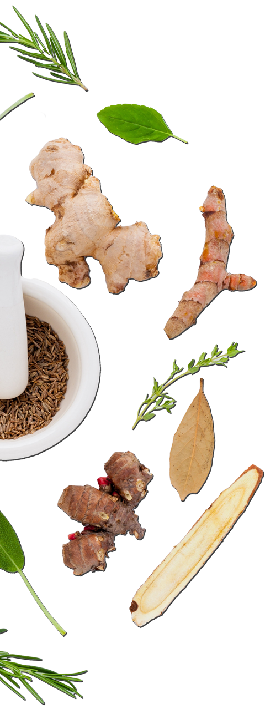 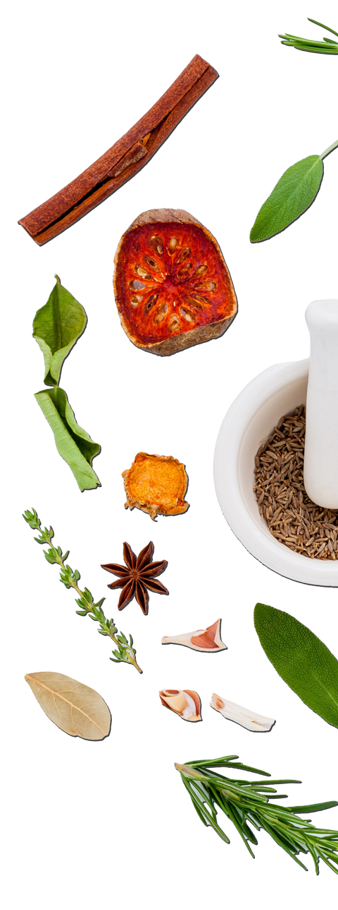美容・ダイエット
新陳代謝を上げるカプサイシンはリラックス作用もあり、暴飲暴食を防いでくれます。
整腸・解毒作用
クミンは消化液の分泌が活性化し整腸や解毒作用に効果があり、食欲増進や消化の促進に！
風邪予防
シナモンの血行促進効果で免疫力を高めていれば風邪にもかかりにくく！
デトックス効果
フェンネルは、塩分の排出を促すカリウムが非常に豊富、不要な老廃物をデトックスする効果があります！
今月のおすすめレシピ
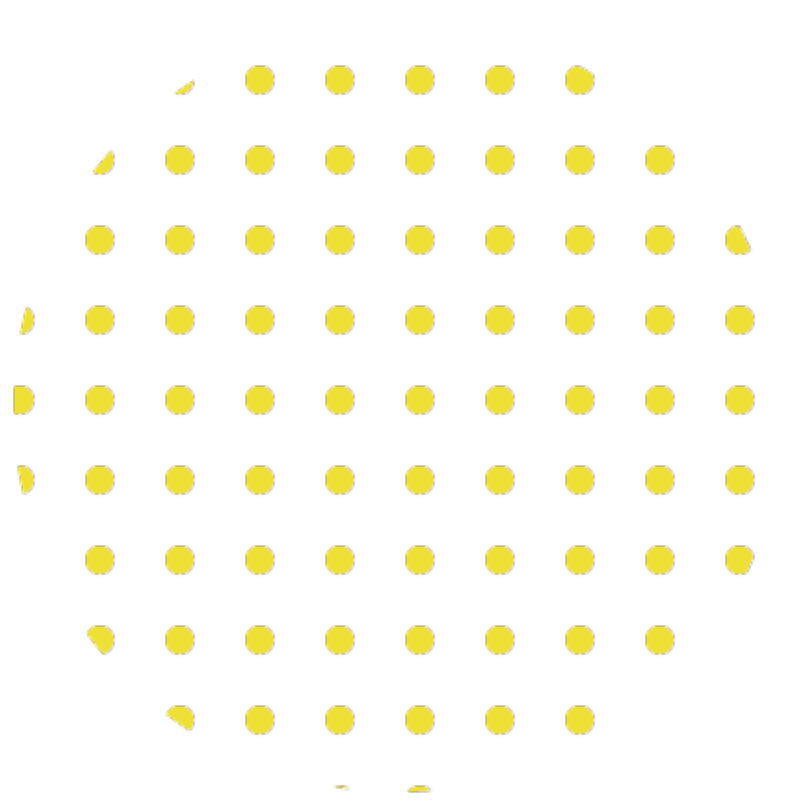 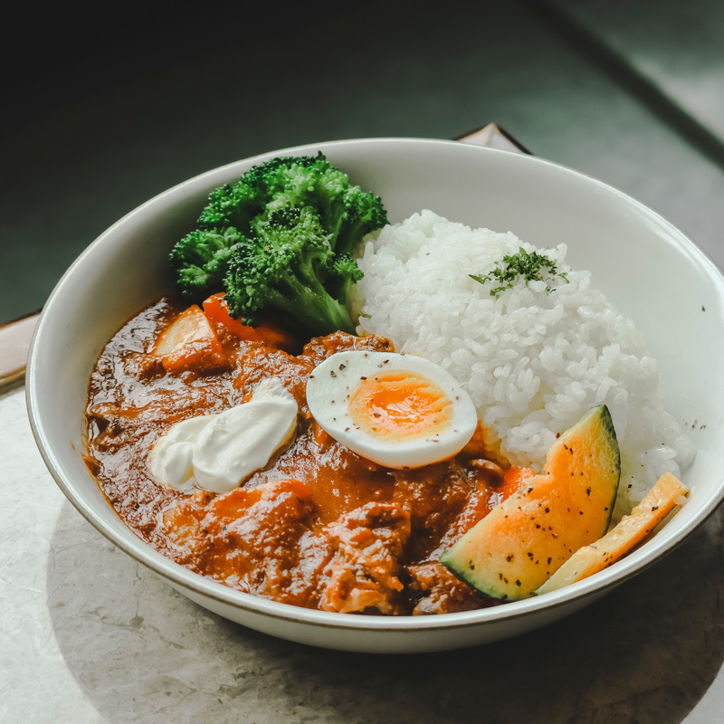 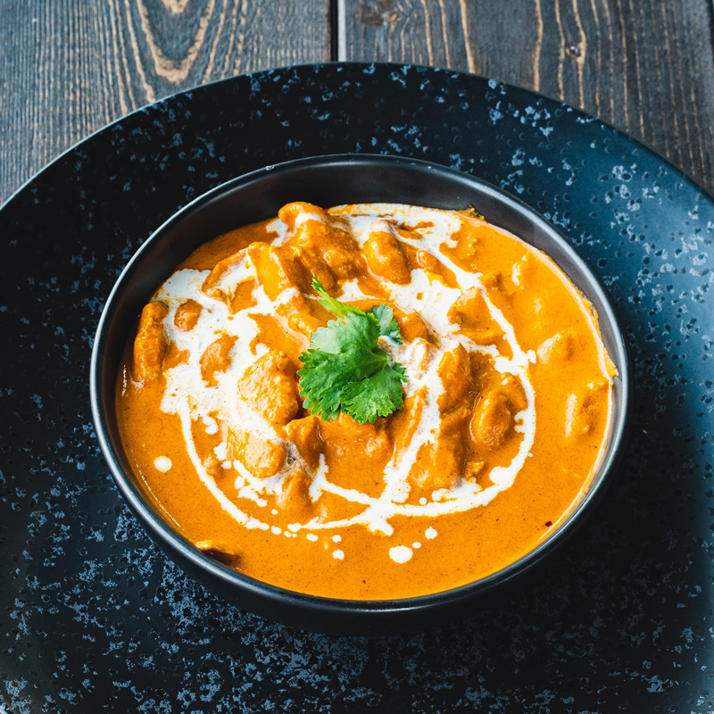 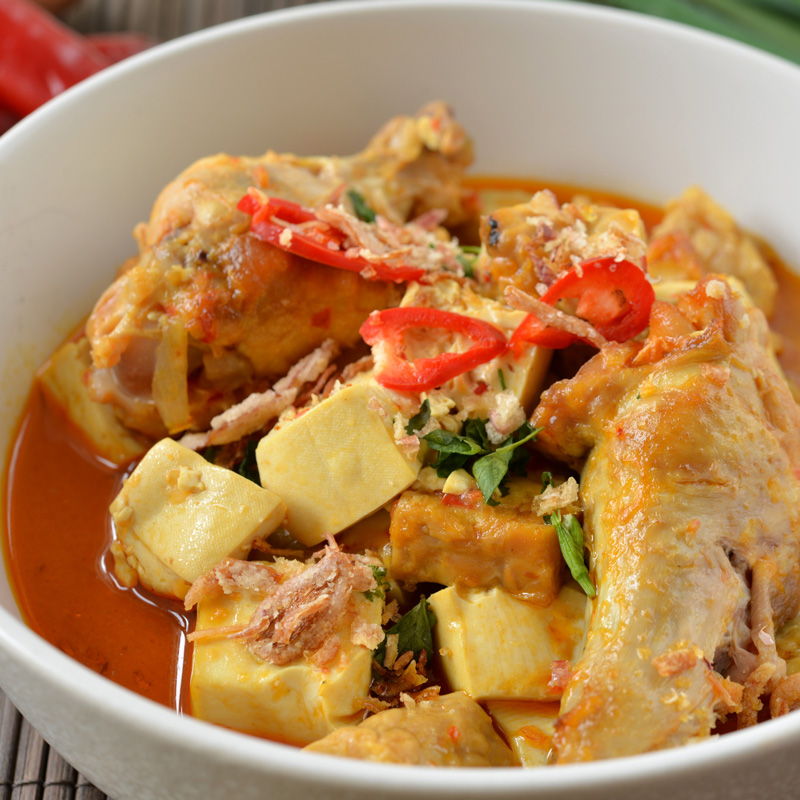スパイスコラム
-

2022
12/24インドで’’本物’’のカレーを食べて「カレー感」が変わった話。
-
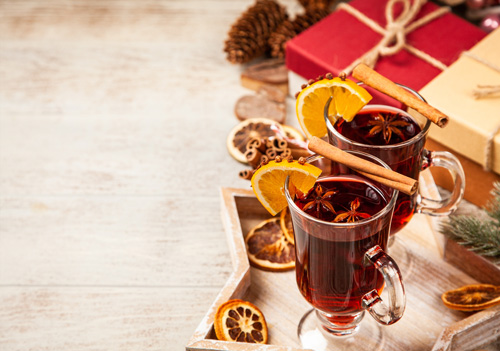
2022
12/24世界では定番！スパイス×お茶レシピ完全版！変わり種も紹介します。
-
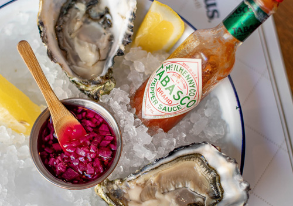
2022
12/24あなたはまだ本当のタバスコを知らないー…、タバスコに合う料理徹底研究。
-
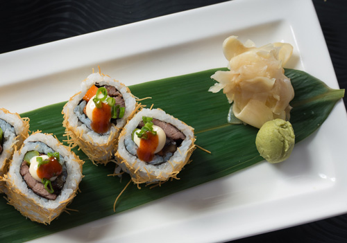
2022
12/24薬味？スパイス？わさびとガリは日本のスパイスだった！